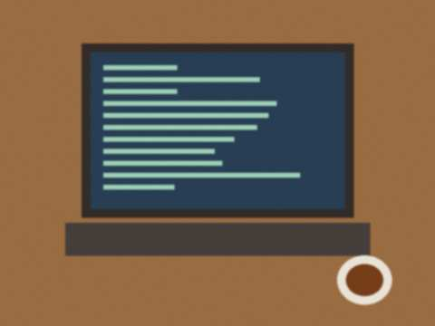

Saturday, June 28th, 2008 · 9:40 pm
They come by suitcase and they come very nice. The box is the same, the manual is the same, the logo is the same. Here is my list from the counter of how to tell:
- Weight. A real one is heavier by a few grams. The battery is real lithium. The fake battery is a sad brick.
- Under the battery: dial *#06# and compare the number with the sticker. If they differ, the phone has two names.
- The screen when you turn it off: real ones go black, quietly. Fakes have a small blue light, like a ghost.
- The sound: a real ringtone is clear, a fake one hurts your ear.
- The price: if it is 40% below the shop prices, ask yourself why.
I do not say all Chinese phones are fake. Some of them are honest, they say "Nokla" on the case and nobody lies. I respect that more.
Saturday, May 17th, 2008 · 8:10 pm
Many customers ask me this since the 17th of March and I answer it forty times a day, so here it is once for everybody.
Phones come from abroad and they are bought in dollars. Before March the dollar was 5 som. Now it is 8.40. A phone that cost our boss $60 at the wholesale was 300 som, now it is more than 500. The boss did not become greedy, the arithmetic became bigger.
Here is what I tell people at the counter:
- The cheapest new phone in the shop today: 520 som. A simple Nokia, no camera, a torch.
- The mid range with 2 MP camera and a card slot: 900-1,100.
- The one with the slide and the click: 1,300 (yes, I know).
- Second-hand: from 250, but ask me first, I check it with a magnet and a screwdriver.
If your salary is in som and your phone is in dollars, buy the simple one and keep it for five years. It will survive. The shiny ones are for people who are paid in dollars (and I see them, they pay and don't look at the price, like in a dream).
Sunday, April 20th, 2008 · 8:30 pm
Came to our shop on Thursday, three pieces. It slides up to show the keys and makes a very satisfying click. Camera 2 megapixels, which is enough to photograph your plov and your cousin. Battery: two days if you don't play Snake.
Price at our shop: I can't write it here, the boss says. Come and ask. (It is less than at the big shop near the square.)

The shop counter at 10 a.m., before the crowds.Saturday, April 5th, 2008 · 9:00 pm
New Kündölük is here and it has tags, photo albums and this beautiful glossy theme. Jaltyrak means shiny and it is SHINY. It even has the orange RSS button. I don't know what RSS is but I have the button.
The plan: one post a week about phones and gadgets that you can actually buy in Talas.